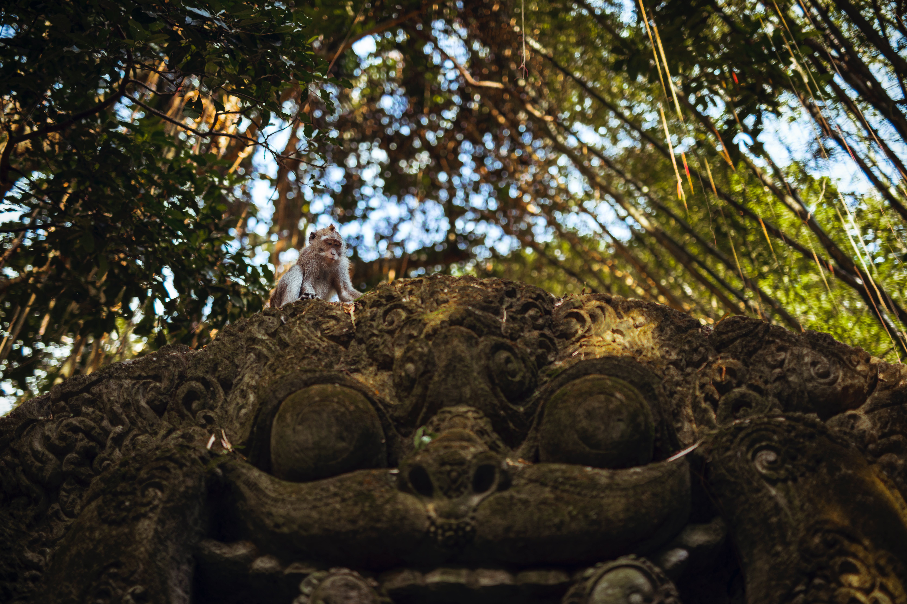

Why Bali
Bali, the Island of the Gods
With its varied landscape of hills and mountains, rugged coastlines and sandy beaches, lush rice terraces, and volcanic hillsides all providing a picturesque backdrop to its colorful, deeply spiritual, and unique culture stakes a serious claim to be paradise on earth.
With world-class surfing and diving, a large number of cultural, historical, and archaeological attractions, and an enormous range of accommodations, this is one of the world's most popular island destinations and one which consistently wins travel awards.